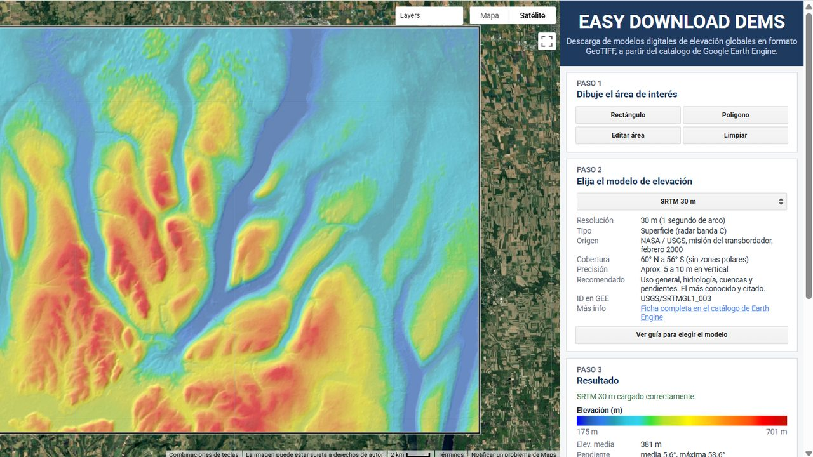

Easy Download DEMs
Descarga modelos digitales de elevación de todo el mundo en formato GeoTIFF, sin registrarte ni programar. Dibuja tu área, compara los modelos con su ficha técnica y revisa la elevación y la pendiente antes de descargar.

Qué es #
Conseguir un modelo digital de elevación suele exigir crear una cuenta en un portal, buscar las teselas de tu zona y unirlas a mano. Easy Download DEMs resuelve todo eso en el navegador, a partir del catálogo de Google Earth Engine. Dibujas tu área sobre el mapa y eliges el modelo. Antes de descargar, ves su ficha técnica, el relieve con sombreado y las estadísticas de tu área. Obtienes un GeoTIFF recortado, listo para abrir en QGIS o ArcGIS Pro. No necesitas registrarte ni saber programar.
Cómo usarla #
- Paso 1, dibuja el área de interés. Elige Rectángulo o Polígono y dibuja sobre el mapa. Con Editar área la ajustas y con Limpiar empiezas de nuevo.
- Paso 2, elige el modelo de elevación. El predeterminado es SRTM de 30 m. Debajo de la lista aparece la ficha del modelo: resolución, tipo, origen, cobertura, precisión, para qué se recomienda y su ID en Earth Engine. Si no sabes cuál usar, pulsa Ver guía para elegir el modelo.
- Paso 3, revisa el resultado. El mapa muestra el modelo con sombreado, una leyenda con la elevación mínima y máxima, y las estadísticas de tu área: elevación media, pendiente media y máxima, y superficie en km².
- Paso 4, descarga la capa. Elige la capa, Elevación (m), que es la altura sobre el nivel del mar en metros, y el formato: GeoTIFF directo o ZIP. La app te muestra el tamaño estimado del archivo. Pulsa Preparar descarga y luego el enlace Descargar que aparece debajo.
- Recibirás un GeoTIFF en coordenadas geográficas (EPSG:4326, WGS 84) a la resolución original del modelo, listo para abrir en QGIS o ArcGIS Pro.
Datos disponibles #
| Modelo | Resolución | Fuente |
|---|---|---|
| SRTM | 30 m | NASA / USGS, misión del transbordador (febrero de 2000) |
| NASADEM | 30 m | NASA |
| Copernicus GLO-30 | 30 m | ESA / Copernicus |
| ALOS AW3D30 v3.2 | 30 m | JAXA |
| ASTER GED | 100 m | NASA |
| GTOPO30 | 1 km | USGS |
| ETOPO1 | 1,8 km | NOAA, incluye los océanos |
Ten en cuenta #
Antes de descargar, revisa el tamaño estimado en el Paso 4. Si tu área es muy grande, divídela en partes.
El GeoTIFF directo no hay que descomprimirlo, pero Google le pone un nombre aleatorio que termina en _getPixels.tiff. Cámbialo por el nombre que sugiere la app, por ejemplo SRTM30_elevacion_30m.tif, o elige ZIP para que conserve el nombre del modelo, la capa y la resolución.
ETOPO1 es el único modelo que incluye los océanos. Para saber el tipo, la cobertura y la precisión de cada modelo, revisa su ficha en el Paso 2 o pulsa Ver guía para elegir el modelo.